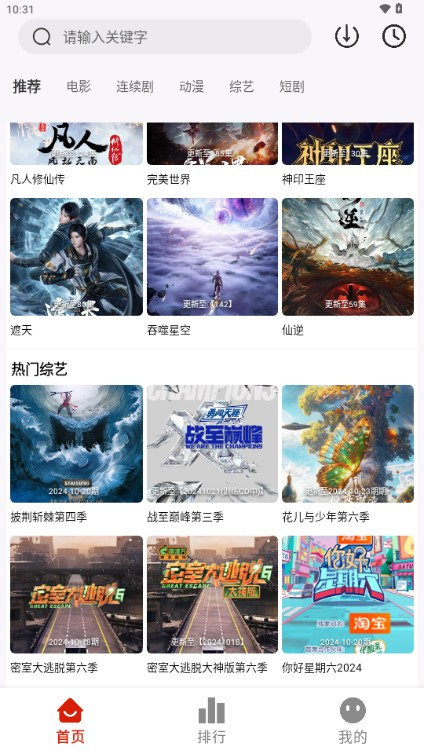
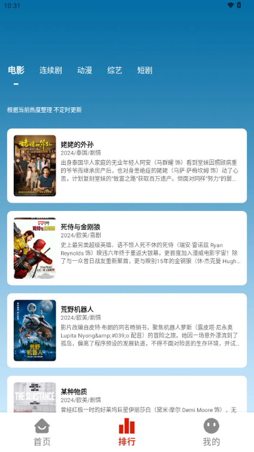

MITO 从热剧猫到 2.2.0：一款追剧工具五年迭代里的死磕与放弃
MITO 的前身是热剧猫，从一个简单的影视聚合入口走到今天 2.2.0，多线路切换、离线缓存、分类组织这些功能是怎么一步步磨出来的，团队又在哪些地方选择了长期不做。
现在这版：2.2.0 像什么
打开 MITO 2.2.0，首页的结构干净得有点过分——一排分类 Tab（电影、连续剧、动漫、综艺、短剧、纪录片）横向排开，中间是推荐流，底部四个导航。没有会员入口，没有开屏广告，没有积分体系，甚至连"签到送金币"这种常见的引流手段都看不到。就这么一个 25 MB 左右的安装包，MITO官网能找到，安卓 5.2 及以上就能装，装完直接用。
它的核心体验被压缩在三件事里：找到片、看得顺、存得下。找到片靠分类 Tab 和搜索，看得顺靠多线路切换和清晰度调整，存得下靠离线缓存和投屏。这三件事之外的东西，团队几乎全砍掉了。

来路：从热剧猫起步，文档没说的部分
样本文档里最早的版本号停在 2.2.0，往前的历史只提了一句"前身为热剧猫"。但从产品形态反推，能看出几个关键的转变点。
热剧猫时代的核心诉求应该很直接——把分散在各大视频平台的片子拢到一个入口。那时候"聚合追剧"本身就是卖点，用户的需求是"不想在三个 App 之间跳来跳去找同一部剧"。这个定位到 MITO 时代没有根本变化，但产品细节被大幅打磨了。
我能确认的第一个关键升级是多线路切换。后来去MITO文档翻了一下，里面专门花了一整篇讲"卡了、黑屏、加载不动时第一招是换线路"——每部片子挂两到四条线路，播放页内直接下拉切换，进度保持不变。这个功能不是凭空加的，它是聚合工具绕不开的痛点：聚合的视频源总有失效、总有卡顿，一条线路挂了整个片子就废了。多线路从根上解决了这个问题。
第二个关键节点是分类组织的完善。六个分类 Tab 不是一次定下来的——"短剧"和"纪录片"这两个品类，在更早的聚合工具里经常被塞进"电影"或"连续剧"。单独拉出来作为一级分类，说明团队观察到了用户行为数据：短剧的消费场景（碎片时间、下饭）和电影完全不同，纪录片的受众又是另一群人。
第三个值得单独说的是"不做什么"。样本文档里有一段专门讲它不做的事：不做内容生产、不做会员付费墙、不做注册门槛、不做应用内购——安装包从官方下载拿就行，全程不花钱。从热剧猫到 MITO，这条底线好像从来没破过。很多同类工具在积累了用户之后会忍不住加会员、加广告、加积分，MITO 至今没有。
迭代节奏里的优先级：他们一直在死磕什么
从 2.2.0 这个版本倒推，有几个细节能看出团队的资源分配逻辑。
死磕播放体验，死磕了很久。 多线路切换从"详情页选"进化到"播放页内无缝切换"，进度保持不变——这个体验改动不大，但用户感知极强。清晰度档位切换、离线缓存、投屏，都是围绕"看得顺"这一件事在堆。文档里甚至有一整篇专门讲"一直卡转圈的完整排查"，说明卡顿问题是团队长期观察的重点。
分类体系比想象中重要。 六个一级分类、每个分类下的年份/地区/类型筛选，以及不登录时的热门推荐流排序——这套组织方式在同类工具里算不上花哨，但覆盖了从"有明确目标"到"漫无目的逛"的几乎所有找片场景。团队没有去做个性化推荐算法的深度打磨（登录后的推荐比不登录准，但也没到"千人千面"的程度），而是把精力放在了分类浏览的效率上。
轻装上阵，不背壳。 安装包 25 MB，不做社交、不做评论、不做积分、不做会员。甚至账号体系都很克制——登录只影响推荐流的个性化程度，不登录也能用全部核心功能。这种"极简"不是做不到，而是主动选择。

有什么他们一直没碰
反过来看，有些功能在同类工具里几乎是标配，但 MITO 至今没有。
评论和社区。 你在任何一个片子详情页都找不到评论区、弹幕、或者"看过的人也在追"这类社交化推荐。对一个聚合工具来说，做社区不难，难的是做了之后内容审核和服务器成本会迅速膨胀。团队选择不碰这块，等于主动放弃了用户停留时长的数据增长，但换来了轻量和稳定。
会员和付费。 没有会员、没有付费解锁高清、没有去广告——它连广告都没有。这意味着它没有直接的变现渠道，可持续性完全依赖于"做一个好用的工具，靠口碑传播"。这条路走得通吗？从热剧猫到 MITO 的延续性来看，至少还活着。
深度个性化推荐。 登录后的推荐流会参考观看历史，但也只是"你看过古装剧，推荐流里古装剧多一点"的程度。没有标签体系、没有用户画像、没有协同过滤。如果你想要的是"刷着刷着就停不下来"那种算法投喂感，MITO 给不了你。但如果你想要的是"我知道我想看什么，帮我快速找到"，它反而更顺手。
下一步会往哪走
从迭代规律推，不是官方口径，就是我自己的观察。
我觉得 MITO 大概率会继续死磕"播放体验"这一条线。多线路切换已经做得不错了，但线路的自动选择、根据网络环境智能切换清晰度、离线缓存的后台下载管理——这些地方还有打磨空间。样本文档里提到"部分版本会重新选择最优线路"，说明自动选线可能已经在某些版本里测试过了。
分类体系可能还会微调。"短剧"是近两年才被提到一级分类的，接下来会不会有新的品类冒出来？比如"动漫电影"从电影里独立？或者"纪录片"里再拆出"自然类"和"人文类"？不好说，但分类的颗粒度会跟着用户行为数据走。
社区和付费大概率还是不会碰。除非团队的生存压力到了必须变现的程度——否则他们没理由破坏已经建立起来的"极简、干净、无套路"的品牌认知。
总结一下
MITO 五年的迭代史，其实是一部"不做什么比做什么更重要"的产品史。从热剧猫到 2.2.0，它没有走"加会员、加广告、加社区"的常规路径，而是把所有资源堆在"找到片、看得顺、存得下"这三件事上。多线路切换解决了聚合工具的核心痛点，分类体系覆盖了找片的主要场景，极简的产品形态让它在同类应用里显得特别干净。
如果你想要的是一个不花会员、没有广告、打开就能用的追剧工具，MITO 现在这版已经够用了。如果你期待它变成一个有社区、有算法、有会员体系的大平台——大概率会失望。团队好像从一开始就没打算走那条路。顺手提一句，这套资料在 GitHub、Gitee、GitCode 三个仓库都能拿到，国内访问哪个顺手用哪个。